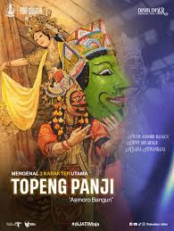

Pada zaman dahulu hiduplah seorang pangeran bijaksana bernama Raden Panji Asmoro Bangun. Ia adalah putra mahkota dari Kerajaan Kediri yang dikenal karena keberanian dan kebaikan hatinya.
Panji Asmoro Bangun memiliki kekasih bernama Dewi Candra Kirana. Mereka berdua saling mencintai dan berencana untuk menikah.
Namun suatu hari Dewi Candra Kirana menghilang secara misterius. Panji Asmoro Bangun sangat sedih dan memutuskan untuk mencari kekasihnya ke berbagai daerah.
Dalam perjalanannya Panji menyamar sebagai rakyat biasa agar dapat lebih mudah mencari informasi. Ia melewati banyak desa dan kerajaan sambil menolong orang-orang yang membutuhkan bantuan.
Setelah perjalanan yang panjang, akhirnya Panji berhasil menemukan Dewi Candra Kirana dan membebaskannya dari berbagai kesulitan yang menimpanya.
Mereka akhirnya kembali ke kerajaan dan hidup bahagia bersama.